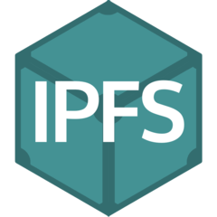

InterPlanetary File System or just "IPFS" is a protocol and network designed to create a content-addressable, peer-to-peer method of storing and sharing hypermedia in a distributed file system. IPFS was first made by Juan Benet and is now an open-source project developed with help from the community.
 Neocities first started to use IPFS around August 2017 when Kyle Drake published a new post on the Neocities Blog entitled IPFS DNS Support, where he talks about how "most of the 140,000+ sites that have a neocities.org subdomain can now be accessed through IPFS via DNS", Drake continues on by sayin:-
I've never been shy about our support for the distributed web. As the flaws of today's web continue to lead to increased centralization, and with Net Neutrality being gutted, the stakes for a good future for the web have never been more clear to me. That's why we were one of the first organizations to start doing implementation work with IPFS, which I continue to believe is the next version of the web, and the logical successor to HTTP.Continuing down this adoption path, I'm happy to announce that Neocities now has support for IPFS DNS records! That means that most of the 140,000+ sites that have a neocities.org subdomain can now be accessed through IPFS via DNS.
May people on Neocities have given their criticism of IPFS, mostly due to it never being online and that it is seemly pointless to have if it doesn't work. In April 2018, Retroity published an article, The Neocities Problem, and in the article they shortly talk about IPFS;
Meanwhile, IPFS archiving has been down for a while with no updates as to why or when it will be returning.
This page was last updated: 2019-03-05 @ 04:34
In total this page has had 2 updates since it was uploaded.